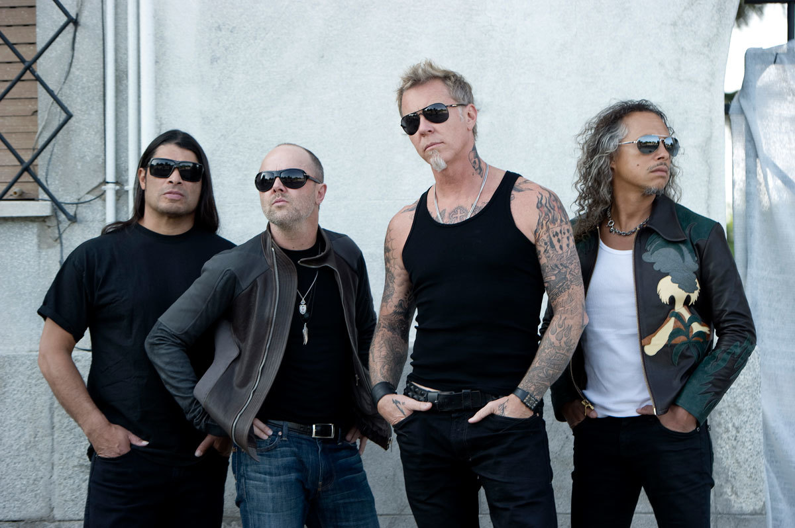

Метал — музыкальный жанр, разновидность рок-музыки, сформировавшаяся в начале и середине 1970-х годов, преимущественно в Британии и США, и распространившаяся по всему миру. Характерные черты метала — перегруженный звук электрогитары, достигаемый перегрузом ("гейном") гитарного усилителя, либо перегруз его эффектом электронной педалью с эффектом дисторшн, затяжные гитарные соло, энергичный ритм, как правило, шести-, восьми- или двухдольный размер такта, облегчённые риффы.
Метал достаточно разнообразен, имеет множество стилей (поджанров), от сравнительно «мягких» (классический хеви-метал, пауэр-метал) до весьма «тяжёлых» и трудных для восприятия неподготовленным слушателем (дэт-метал, блэк-метал). Для разных поджанров характерны разные элементы. Так, вокал варьируется от чистого и высокого в традиционных поджанрах до гроулинга и скриминга в экстремальных, различаются также скорость, тяжесть и сложность. Песни в метале часто посвящены энергичным, мужественным темам, вроде войны, исторических героев, фантастики или ужасов, но встречаются тексты и на любые другие темы.
Музыка «металлических» жанров распространена практически во всех странах, но наиболее крупные сцены сформировались в северной Европе (Британия, Скандинавия, Германия) и Северной Америке (США, Канада). Во всех странах Европы, включая Россию, существуют развитые региональные сцены, так же как и в Бразилии, Японии и многих других неевропейских странах. На Ближнем Востоке, за исключением Израиля и Турции, тяжёлый метал менее развит из-за жёстких цензурных ограничений.

Metallica
Metallica – американская метал-группа, образованная в 1981 году. На данный момент группа выпустила десять студийных альбомов. Metallica оказала большое влияние на развитие метала и входит в «большую четвёрку трэш-метала» вместе с группами Slayer, Megadeth и Anthrax. Альбомы Metallica были проданы в общей сложности в количестве более 110 миллионов экземпляров по всему миру, что делает её одним из самых коммерчески успешных металлических коллективов. В текущий состав группы входят вокалист и гитарист Джеймс Хетфилд, барабанщик Ларс Ульрих, гитарист Кирк Хэммет и басист Роберт Трухильо.
Megadeth
Megadeth – американская метал-группа, сформированная в 1983 году. Коллектив основан гитаристом и вокалистом Дэйвом Мастейном и бас-гитаристом Дэвидом Эллефсоном после того, как Мастейн был уволен из группы Metallica. С тех пор Megadeth выпустили 15 студийных альбомов. За тридцать пять лет активной деятельности в Megadeth официально участвовало более двадцати музыкантов, и лишь Дэйв Мастейн остаётся лидером группы ещё с первого состава и основным автором песен. Megadeth вместе с Metallica, Anthrax и Slayer называют «большой четвёркой» трэш-метала. В текущий состав помимо Мастейна входят гитарист Кико Лорейро и барабанщик Дирк Вербурен.
Avenged Sevenfold
Avenged Sevenfold – американская метал-группа, образованная в 1999 году, считается одной из групп-лидеров новой волны американского хэви-метала. В текущий состав входят вокалист М. Шэдоус, ритм-гитарист Заки Вэндженс, ведущйи гитарист Синистер Гейтс, басист Джонни Крайст и барабанщик Брукс Вакерман. На сегодняшний день Avenged Sevenfold выпустили семь студийных альбомов, один концертный альбом и двадцать пять синглов. Первые два студийных альбома (Sounding the Seventh Trumpet и Waking the Fallen) были записаны в стиле металкор, третий (City of Evil) и последующие – ближе к звучанию классического хеви-метала.
Iron Maiden
Iron Maiden – британская хеви-метал-группа, которая в начале 1980-х гг. являлась одним из известнейших представителей новой волны британского хеви-метала, а позже оказала значительное влияние на развитие метала в целом. Основателем группы, автором большинства песен (как музыки, так и текстов) и бессменным лидером коллектива является бас-гитарист Стив Харрис. Под его руководством группа, претерпев значительные изменения в составе, прошла путь от выступлений в лондонских пабах до мировых турне. Немаловажную роль в успехе группы также сыграл менеджер Iron Maiden Род Смоллвуд, который присоединился к группе с момента её основания и остаётся в ней по сей день.
Black Sabbath
Black Sabbath – британская рок-группа, образованная в Бирмингеме, Англия, в 1968 году и оказавшая значительное влияние на развитие рок-музыки, прежде всего, хеви-метала. Дебютный альбом Black Sabbath считается одним из первых хеви-метал-альбомов, заложившим, кроме того, фундамент и для последующего развития дум-метала. В первоначальный состав группы входили Оззи Осборн, Тони Айомми, Гизер Батлер и Билл Уорд. Состав постоянно менялся, в группе успели поучаствовать более двадцати музыкантов, включая Ронни Джеймса Дио, Тони Мартина и Джеффа Николлса. Участники группы образовали такие проекты как Dio, GZR, Heaven and Hell.
Sabaton
Sabaton – шведская пауэр-метал группа, основанная в декабре 1999 годa. В текущий состав группы входят вокалист Йоаким Броден, басист Пар Сундстрём, гитаристы Крис Рёланд и Томми Йоханссон, барабанщик Ханнес Ван Дал. Тематика песен – войны и отдельные сражения и подвиги. Основное творчество посвящено XX веку. Carolus Rex – концептуальный альбом, посвящённый Тридцатилетней и Северной войнам. The Last Stand – альбом,в котором песни поются про героические и зачастую самоубийственные оборонительные битвы (Битва при Сирояме, Фермопильское сражение). Тексты песен повествуют в основном об истории войн, героизме и доблести солдат.

Meshuggah
Meshuggah – шведская метал-группа, играющая в направлении мат-метал и являющаяся основателем этого жанра. Группа привлекла к себе внимание после выхода второго студийного альбома Destroy Erase Improve, сочетающего в себе грув-метал и прогрессивный метал. Meshuggah стала известной благодаря своему новаторскому музыкальному стилю, для которого была характерна запутанная структура песен и полиритмия. В текущий состав входят вокалист Йенс Кидман, соло-гитарист Фредрик Тордендаль, ритм-гитарист Мортен Хагстрём, басист Дик Лёвгрен и барабанщик Томас Хааке.